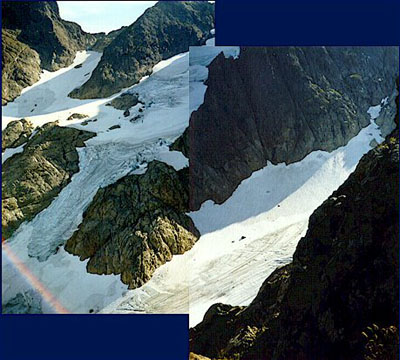
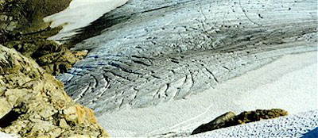
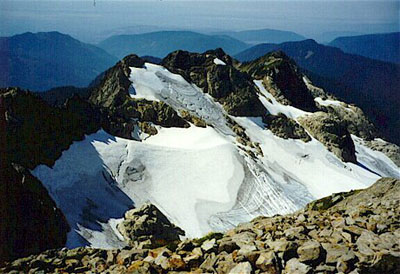
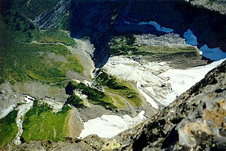
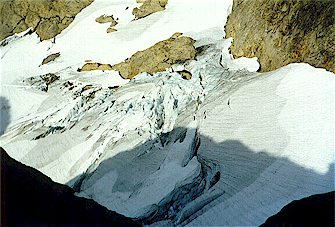

Three Fingers Mountain

The weather was just too good to miss, so I took a day off to hike up to the Three Fingers Lookout. Within weeks, dustings of snow would make the trip unpleasant, and I had wanted to make this hike since moving to Washington last March. I took a small day pack with a water bottle, sunscreen and gaiters, and I carried my ice ax.The first two miles went slowly in the early-morning chill. I moved as fast as possible along a very humpy and rooty trail. In some places, the soil had eroded to 2 feet below a trippy collection of roots that require balance to cross. Nothing could diminish my desire to burn up the miles and the elevation as fast as possible though. Here and there I got glimpses of the “fingers” through a hole in the forest. They looked very far away.


The trail got better, and soon I was in blueberry-bush country, where the trail winded along dry creekbeds and up and over lightly forested hills. The last water was in here, and I would soon be worrying about that. Finally, at 4 miles I came to the Goat Flats camping area, and the trail led steeply up to Tin Pan Gap. Along the way, I crossed a charming south-facing basin with fat marmots chuckling and whistling. The old miners called them “whistle-pigs,” and claimed they were good eatin’. Have you noticed that every sentence that refers to miners or some similar old-west topic is required to use ‘ characters?
The view from Tin Pan Gap was exceptional, I was really impressed by the broken appearance of the Three Fingers Glacier. It was tempting to crampon down to a level-but-crevassed area to explore, but I didn’t have crampons. After a brief rest I headed easterly up the ridge towards the South Peak, with it’s very tiny lookout building on top. Immediately, I ran into a big moat (a cleft created where a wall of snow separates from a wall of rock). Ready for adventure, I stemmed along in the moat, one foot on the snow wall, and one on the rock. My ice ax provided balance by slamming the pick into the snow. Finally, the rock became to steep to progress this way. The snow looked quite hard and icy, so I scrambled up the rock a ways. But I was entering 5th class climbing terrain with no visible exit (except for the hole of darkness below where the rock/snow separation continued into a cold, wet grave!). I climbed back down and decided to try the snow, and this worked pretty well. After a few yards, I found the trail again and left the steep snow happily.
Later I climbed a mini-peak on the ridge and descended a gully on the other side because the trail around was very snow-covered. Incredibly pleased, I trolloped along, memorizing R. Service poetry:
No! there's the land (have you seen it?),
It's the cussedest land that I know.
From the big, dizzy mountains that screen it,
to the deep, deathlike valleys below.
Some say god was tired when he made it,
some say it's a fine land to shun.
Maybe, but there's some as would trade it,
for no land on earth, and I'm one.
Back on the south slope and running low on water, I endured a hot, rocky plod around a basin and slowly up. After this the trail steepened and switchbacked up the side of the South Peak. Along here I got some much-needed water from snowmelt, and a little shade too. I emerged on a large, low-angle snowfield, made for easy walking and a fun glissade on the way home. After this, there were about 300 feet of easy scrambling, following cairns left by others. The cairns were a bit random though, and sometimes I would just head up, following my nose (I can smell lookout towers!).


Long before I expected it, I rounded a corner and was greeted by the three ladders to the summit. I’ve read about these ladders, and how frightening they are. They are quite exposed: almost right below you is a 1000 foot drop to the glacier. But it’s very easy to hang on! There is also a rope to aid in moving from one ladder to the next. I would only worry about these ladders if they were covered in ice.
The lookout was cool. In fact, I’m not going to talk about it much. I was
rather moved by the log book.
One couple hiked up on their 30th “lookout” anniversary. The lookout is
a very special place, because people who come here keep it neat and clean.
Sadly, it seems that too much exposure can ruin such experiences.
After a nice lunch and a nap, I climbed down the ladders and the rocks to the snow slope. I did some clumsy standing glissades then continued down the faint trail. I got some more water at the snowmelt for the thirsty trip back. The afternoon had become very hot, and hazy due to forest fires around Lake Chelan.
The whistle-pigs must have been hiding in their dens, because I didn’t hear a peep on the way out. When I got to the moat, I realized that I could have avoided the tricky work had I just looked around a bit more: the trail was 15 feet off to the side of it! I must have been eager for adventure. I took the trail for the way home!
After a few miles I ran out of water, refilling at a muddy seep along the way.
The last two miles seemed to take 27 years, but finally I was back at the car.
I’m writing this in early October, and the rains have
started. I’ll bet the ladders are a bit icy now!